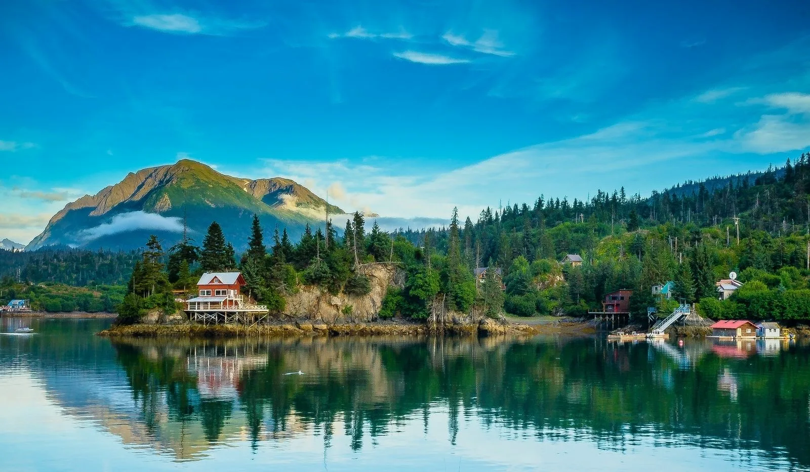

От южного конца к западной стороне видели юрты-жилья версты на полторы, и ко оным де юртам за ветром блиско подойтить было нельзя, и пошли подле земли по южную сторону, и стало де быть мелкое место, бросили лот, глубины 7 и 6 сажен, и с того места возвратились назад и стали лаверить подле Большей Земли, чтоб к земле подотить, и стал де быть ветр велик от земли противной И сказал подштюрман, что надлежит им итить и держать курс зюд-вест. И от оной Большей Земли таким великим ветром отнесло, а ветр де был норд-норд-вест. А с четвертого де острова (о. Кинга) пригреб к боту чюкча в малом ялыче, по их называетца кухта, а от боту был в растоянии сажен в шести, и он де, Гвоздев, ево чрез толмача спрашивал о Большей Земли: какая земля, и какие на ней живут люди, и есть ли лес, также и реки, и какой зверь. И он де, чюкча, сказывал толмачу и называл Большей Землей, и на ней де живут их же чюкчи, и лес де имеетца, также и реки, а про зверей сказывал, что имеетца алень дикой, куницы, и лисицы, и бобры решные».
Несколько интересных фактов о Аляске!
1.В лесах Аляски обитает разнообразная фауна, включая как хищников, так и травоядных животных, а также различные птицы. Крупными млекопитающими являются лоси, карибу (северные олени), бурые медведи (включая кадьяк), чёрные медведи, волки и канадская рысь. Среди птиц можно отметить белоголового орлана, белых гусей и других видов.
2.В лесах Аляски преобладают хвойные деревья, такие как ситхинская ель, туя складчатая (гигантская), а также тсуга западная. Кроме того, встречаются лиственные деревья, такие как береза бумажная, осина, тополь бальзамический. В подлеске можно найти карликовую березу, иву, ольху.
3.На Аляске очень большие лесные массивы, занимающие большую часть территории штата. Наиболее крупным национальным лесом в США, расположенным на Аляске, является национальный лес Тонгасс, площадь которого составляет около 69 000 км². В целом, национальные леса Аляски занимают 8,9 миллионов гектар, что больше, чем в любой другой штате США.
4.Аляска - гористая территория, где преобладают хребты и горы. Гора Денали (ранее Мак-Кинли) является самой высокой точкой Северной Америки, а также находится здесь второй по высоте гора Северной Америки - гора Святого Ильи. Аляскинский хребет - самая большая горная система на Аляске, образующая дугу с запада на восток.
5.Самая высокая гора на Аляске - Денали (ранее Мак-Кинли) - имеет высоту 6194 метра. Другие высокие горы Аляски включают Форакер (5304 м), Хантер (4442 м), Хэйес (4216 м).
6.На Аляске есть множество рек, среди которых наиболее известные и крупные – река Юкон, река Кускоквим, река Колвилл, река Коппер. Самая длинная река на Аляске – река Юкон, она берет начало в Канаде и протекает через Аляску.
7.Самая большая река на Аляске - это река Юкон. Она имеет длину 3190 км и водосборный бассейн 839 200 км². Также стоит отметить реку Кускокуим (9-я крупнейшая река США по среднему расходу воды) и реку Коюкук.
.webp)
.webp )